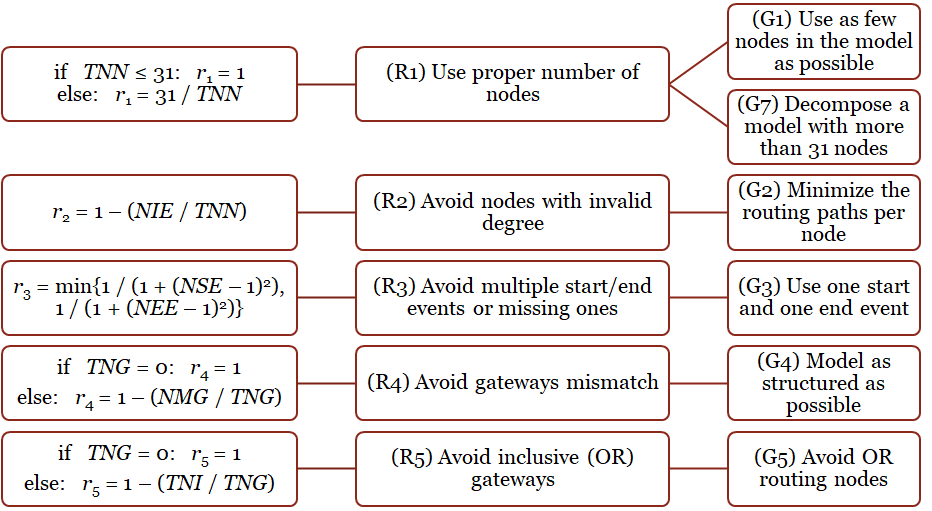

Since business process modeling is considered as the foundation of Business Process Management, it is required to design understandable and modifiable process models used to analyze and improve depicted business processes. Therefore, this article proposes a method for business process model analysis and improvement. The lifecycle of Business Process Management from business process modeling to applying the Business Intelligence and process mining techniques is considered. Existing approaches to business process model analysis are reviewed. Proposed method is based on best practices in business process modeling, process model metrics, and corresponding thresholds. The usage of business process model metrics and thresholds to formalize process modeling guidelines is outlined, as well as the procedure of business process model analysis and improvement is shown. The application of Business Intelligence techniques to support the proposed method is demonstrated.

Business process management has become the most widely-used and reliable approach to organizational management over the last decades. It is also considered as a part of quality management system in an organization. Business process modeling is the core of business process management, which is used for visualization, analysis, and improvement of organizational activities. Moreover, business process modeling plays an important role in the context of business process management maturity of an overall enterprise. Therefore, this paper is focused on the problem of business process model quality evaluation. Existing approaches based on the process modeling guidelines, measures and corresponding thresholds are reviewed, as well as the refined process modeling rules, corresponding quality criteria, the generalized quality criterion, and thresholds for its translation into linguistic values are proposed. The data model and software prototype are developed and the validation results are outlined.

Context. A relevant problem of an approach development used to reduce system or random errors which occur during business process models design is solved. The object of the research includes graphical and mathematical models which describe business process structure. Objective. Minimization of systematic or random errors based on the development of an approach to formation and analysis of a business process structure in IDEF0 notation. Method. The approach to formation and analysis of a business processes structure in IDEF0 notation is proposed. Balancing coefficient, which was modified and augmented, considering weight coefficients of arcs of various types, is used for IDEF0 diagrams analysis. Cohesion types defined in the ISO/IEC/IEEE 2476 standard, which weight coefficients are calculated using their values normalization, are used to define values of arc weight coefficients. Results. The approach to IDEF0 diagrams analysis, which allows defining structural changes of diagrams to satisfy balancing requirements, has been developed. Recommendations obtained as a result of IDEF0 diagrams analysis, which describe product purchase and software release processes, and also recommendations of DevOps concept and SCOR supply chain reference model have been used to transform the source diagrams according to the balancing requirements. Further research may consider using of expert judgments for making decisions on recommendations development. Conclusions. The proposed approach can be used to support activities of collecting, storing, and sharing organizational knowledge allowing to analyze and improve business process models before they are added into an enterprise repository for future reuse to design new solutions. Next studies will consider various approaches to business process models representation in an enterprise repository, corresponding to Archimate, ARIS, and other notations.

Since business process modeling is considered as the foundation of Business Process Management, it is required to design understandable and modifiable process models used to analyze and improve depicted business processes. Therefore, this article proposes a method for business process model analysis and improvement. The lifecycle of Business Process Management from business process modeling to applying the Business Intelligence and process mining techniques is considered. Existing approaches to business process model analysis are reviewed. Proposed method is based on best practices in business process modeling, process model metrics, and corresponding thresholds. The usage of business process model metrics and thresholds to formalize process modeling guidelines is outlined, as well as the procedure of business process model analysis and improvement is shown. The application of Business Intelligence techniques to support the proposed method is demonstrated, as well as the obtained results are shown and discussed.

This paper presents a problem of enterprise architecture artifacts extraction from business process model collections, which organizations of higher maturity levels tend to manage, in order to build the architecture landscape and apply enterprise architecture management practices. Existing enterprise architecture frameworks, languages, and methodologies are discussed. Proposed approach is based on mapping between business process and enterprise architecture elements in order to present all business architecture artifacts in a single coarse-grained model. The software implementation allows generating business architecture landscapes that could be used for architecture evolution purposes, such as transformation planning or maintenance efforts evaluation.

This article considers development of the approach to forming dashboards for business process indicators analysis. The approach idea is based on the dashboard design problem, outlined in analyzed works, which propose a lot of recommendations and best practices, but have a lack of formal approaches to dashboard design definition for specific business process indicators. This study considers application of fuzzy and semantic technologies in order to provide description and analysis of relations between analyzed business process indicators, indicator’s types, and visualization tools. It also considers event log processing of a workflow system, used to execute business processes, which indicators are measured. As a result of implementation and application of the proposed approach, recommendations for a dashboard’s design, based on specific business processes and their performance indicators to be analyzed, can be obtained and implemented. The theoretical essentials, workflow scheme, and early results of the proposed approach are given, future research is outlined.